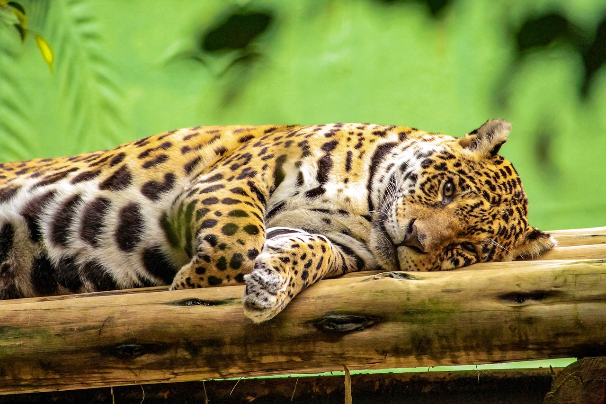
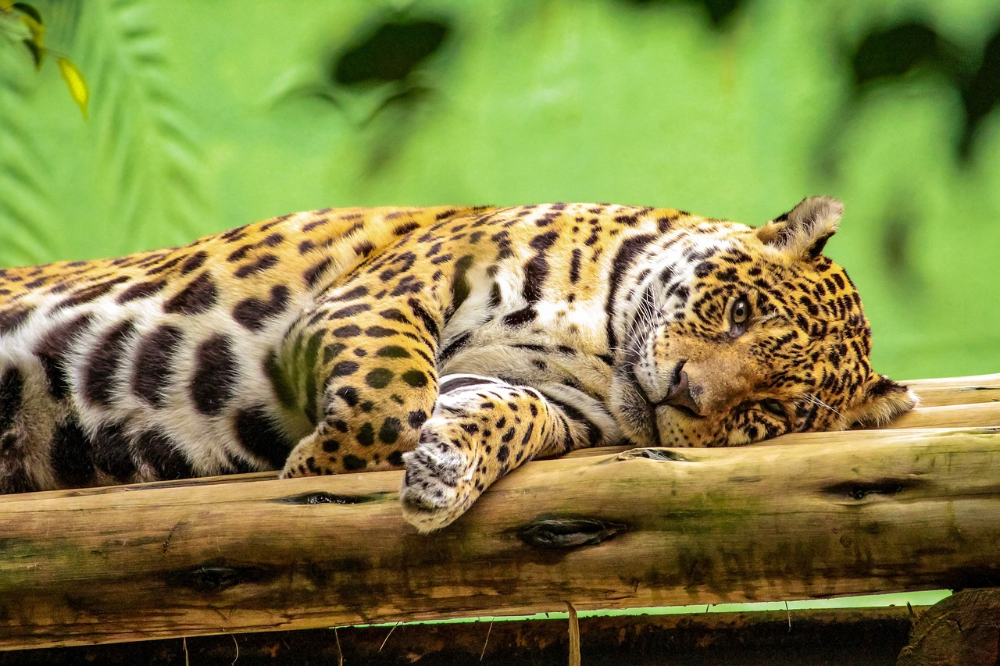

Introdução à Preservação Ambiental
A preservação ambiental é um conjunto de ações e práticas que visam proteger o meio ambiente, seus recursos naturais e a biodiversidade. Diante dos desafios impostos pelas mudanças climáticas, desmatamento e poluição, é fundamental que cada um de nós faça a sua parte para garantir um futuro sustentável para as próximas gerações.
Este site é um convite para você se aprofundar no tema, entender a importância da preservação e descobrir como pequenas atitudes diárias podem fazer uma grande diferença.
Por Que a Preservação Ambiental é Crucial?
Proteger o meio ambiente é essencial por diversas razões:
- **Manutenção da Biodiversidade:** Garantir a sobrevivência de espécies animais e vegetais.
- **Qualidade de Vida:** Assegurar ar puro, água limpa e solos férteis para todos.
- **Equilíbrio Climático:** Combater o aquecimento global e seus efeitos.
- **Recursos Naturais:** Preservar a disponibilidade de água, alimentos e matérias-primas.
- **Saúde Humana:** Reduzir doenças causadas pela poluição e degradação ambiental.
A degradação ambiental afeta diretamente a nossa qualidade de vida e a capacidade do planeta de nos sustentar.
Como Você Pode Ajudar? Pequenas Ações, Grandes Impactos!
Cada indivíduo tem o poder de contribuir para a preservação ambiental. Aqui estão algumas dicas simples que você pode começar a aplicar hoje mesmo:
- **Reduza, Reutilize, Recicle:** Diminua o consumo, reaproveite o que puder e descarte corretamente.
- **Economize Água e Energia:** Pequenas mudanças nos hábitos diários fazem a diferença na conta e no planeta.
- **Consumo Consciente:** Prefira produtos locais, orgânicos e de empresas com responsabilidade socioambiental.
- **Plante Árvores:** Contribua para o reflorestamento e para a purificação do ar.
- **Use Transportes Alternativos:** Caminhe, pedale ou use transporte público sempre que possível.
- **Evite o Desperdício de Alimentos:** Planeje suas compras e aproveite os alimentos ao máximo.
- **Participe de Ações Coletivas:** Engaje-se em projetos e grupos de preservação na sua comunidade.
Galeria da Natureza
Inspire-se com a beleza do nosso planeta e lembre-se do que estamos protegendo.
 

Contato e Mais Informações
Tem dúvidas, sugestões ou quer se envolver mais? Entre em contato conosco ou procure organizações ambientais em sua região.